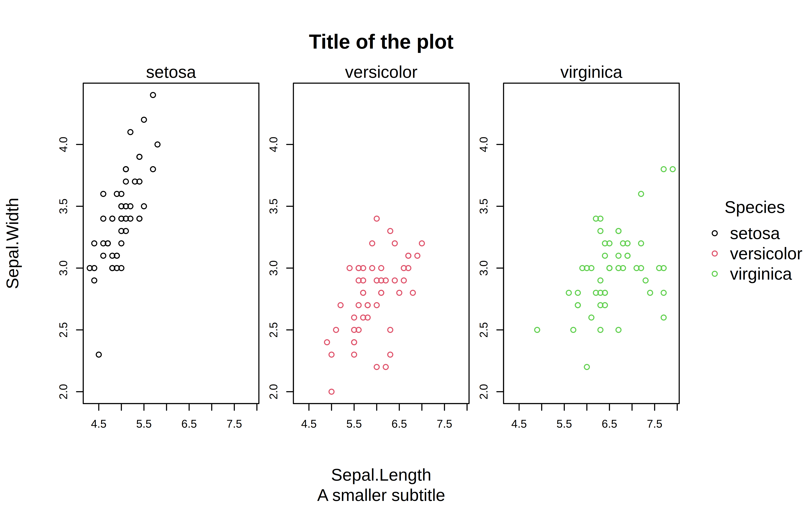
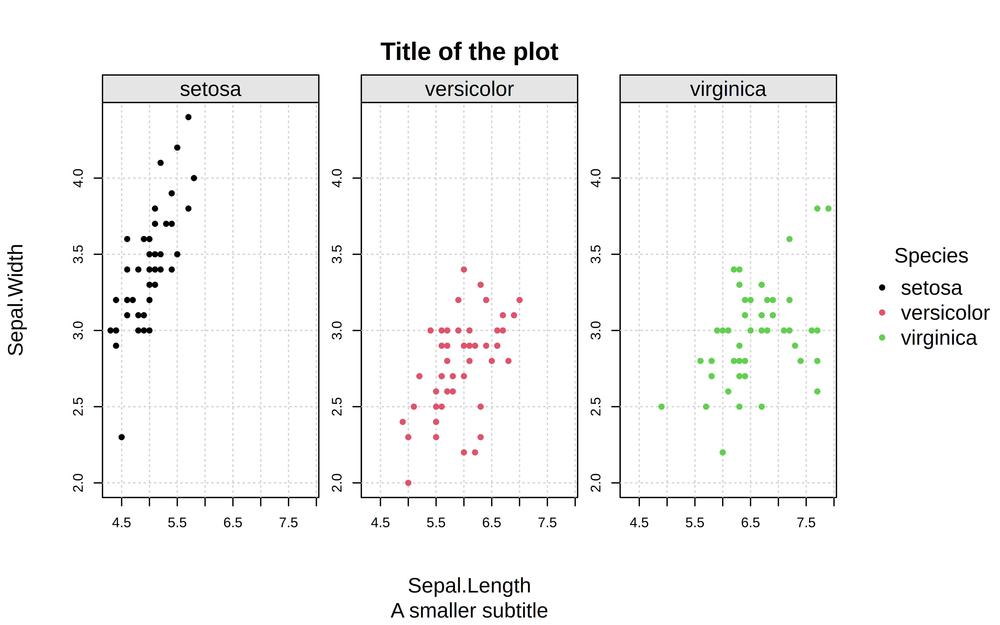
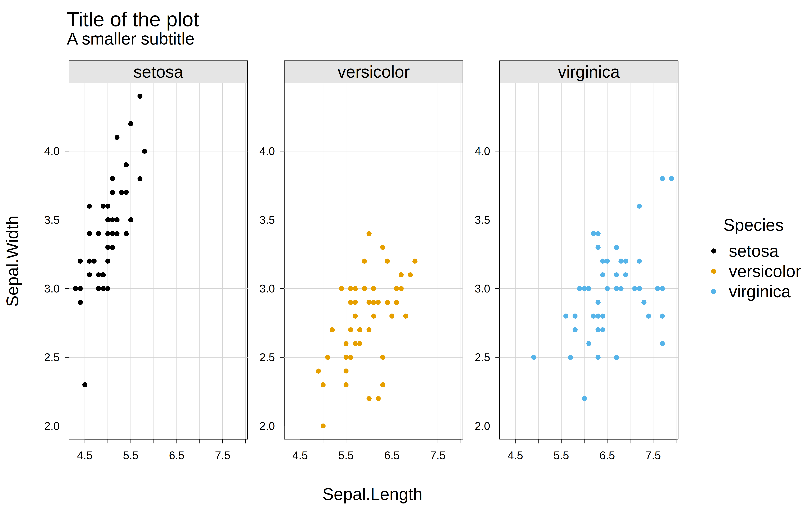
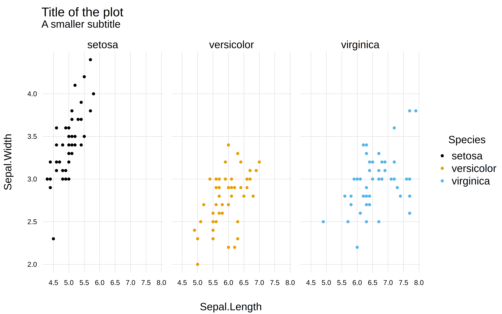
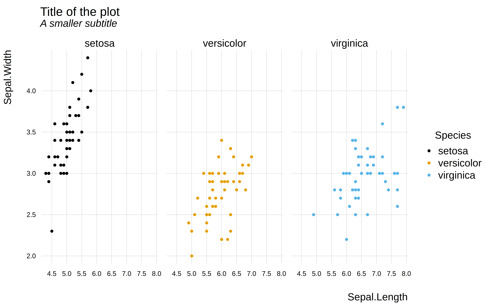
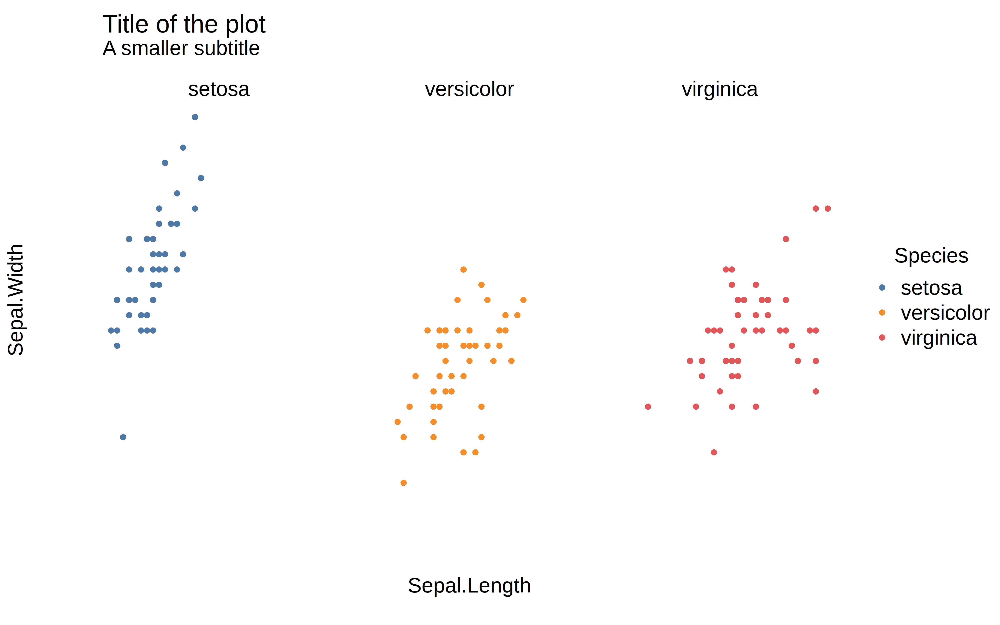
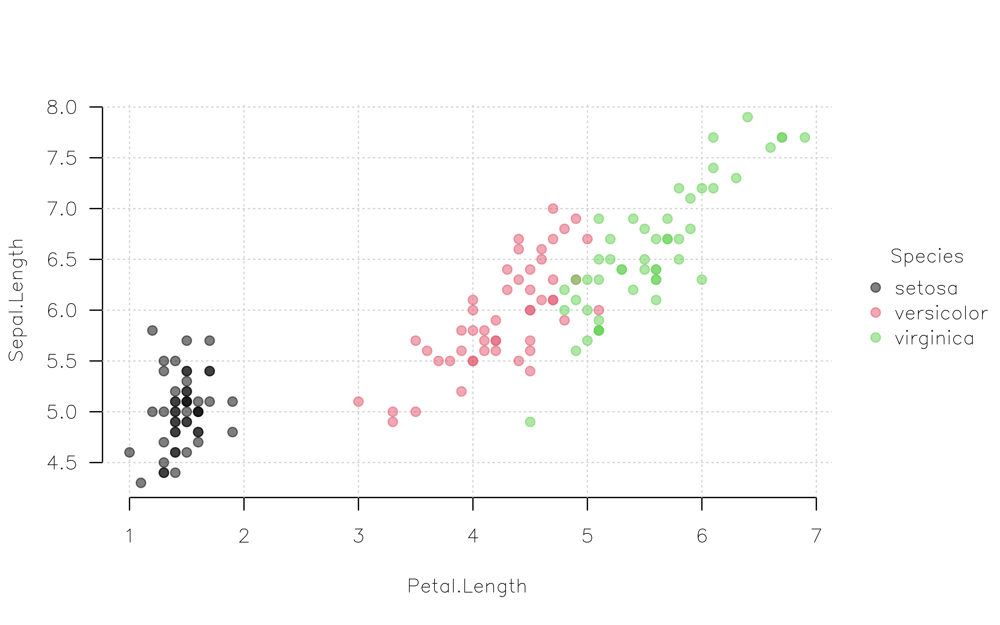

library(tinyplot)
tinytheme("minimal")
tinyplot(
Sepal.Width ~ Sepal.Length | Species,
facet = "by",
data = iris,
main = "Title of the plot",
sub = "A smaller subtitle"
)
The base R aesthetic tends to divide option. Some people like the default minimalist look of base R plots and/or are happy to customize the (many) graphical parameters that are available to them. Others find base plots ugly and don’t want to spend time endlessly tweaking different parameters. Moreover, the inherent “canvas” approach to drawing base R graphics, with fixed placement for plot elements, means that plots don’t adjust dynamically and this can lead to awkward whitespace artifacts unless the user explicitly accounts for them.
Regardless of where you stand in this debate, the tinyplot view is that base R graphics should ideally combine flexibility and ease of use with aesthetically pleasing end results. One way that we enable this is via themes.
tinytheme()The tinytheme() function provides a mechansim for easily changing the look of your plots to match a variety of pre-defined styles. Behind the scenes, this works by simultaneously setting a group of graphical parameters to achieve a particular aesthetic. Let’s take a look at the “minimal” theme for example, which is inspired by a well-known ggplot2 theme.
library(tinyplot)
tinytheme("minimal")
tinyplot(
Sepal.Width ~ Sepal.Length | Species,
facet = "by",
data = iris,
main = "Title of the plot",
sub = "A smaller subtitle"
)
One particular feature that may interest users is the fact that tinytheme() uses some internal magic logic to dynamically adjust plot margins to avoid whitespace. For example, when long horizontal y-axis labels are detected:
tinyplot(
I(Sepal.Width*1e5) ~ Sepal.Length | Species,
facet = "by",
data = iris,
yaxl = ",", # use comma format for the y-axis labels
main = "Title of the plot",
sub = "The left-margin adjusts to accomodate the long y-axis labels"
)As you may have noticed, the changes made by tinytheme() are persistent, and apply to all subsequent tinyplot() calls.
tinyplot(mpg ~ hp, data = mtcars, main = "Fuel efficiency vs. horsepower")
To reset graphical parameters to factory defaults, call tinytheme() without arguments.
tinytheme()
tinyplot(mpg ~ hp, data = mtcars, main = "Fuel efficiency vs. horsepower")
We’ll use the following running example to demonstrate the full gallery of built-in tinytheme() themes.
p = function() {
tinyplot(
Sepal.Width ~ Sepal.Length | Species,
facet = "by",
data = iris,
main = "Title of the plot",
sub = "A smaller subtitle"
)
}tinytheme() ## same as tinytheme("default")
p()
tinytheme("basic")
p()
tinytheme("clean")
p()
tinytheme("clean2")
p()tinytheme("classic")
p()tinytheme("bw")
p()tinytheme("minimal")
p()
tinytheme("ipsum")
p()
tinytheme("dark")
p()
tinytheme("tufte")
p()tinytheme("void")
p()The specialized "ridge" and "ridge2" themes are only intended for use with ridge plot types.
p2 = function() {
tinyplot(
Species ~ Sepal.Width | Species, legend = FALSE,
data = iris,
type = "ridge",
main = "Title of the plot",
sub = "A smaller subtitle"
)
}
tinytheme("ridge")
p2()
tinytheme("ridge2")
p2()# Reset to default theme
tinytheme()Please feel free to make suggestions about themes, or contribute new themes by opening a Pull Request on Github.
Tweaking existing themes is easy. For example, the tinytheme() function also accepts any graphical parameter supported by tpar()/par() and applies them in persistent fashion.
tinytheme(
"ipsum",
pch = 2, col.axis = "darkcyan", cex = 1.2, cex.main = 2, cex.lab = 1.5,
family ="HersheyScript"
)
tinyplot(mpg ~ hp, data = mtcars, main = "Fuel efficiency vs. horsepower")
tinyplot(hp ~ mpg, data = mtcars, main = "Horsepower vs. fuel efficiency")

# reset
tinytheme()Fonts are a suprisingly effective way to add impact and personality to your plots. While it is perhaps underappreciated, base R actually ships with built-in support for quite a few font families. In the code chunk above we used a member of the Hershey font family that comes bundled with the base R distribution (see ?Hershey). But this built-in support also extends to other popular LaTex and PDF fonts like “Palatino”, “ComputerModern”, “Helvetica”, “AvantGarde”, etc. (see ?pdfFonts).
For access to a much wider variety of fonts, you might consider the excellent showtext package (link). This package allows you to install any font family from the Google Font catalog, either on-the-fly or downloaded to your permanent fontbook collection. It plays very nicely with tinyplot.
Similarly, to create your own themes “from scratch”, set the theme to "default" and pass additional graphical parameters to tinytheme().
tinytheme("default", font.main = 3, col = "red")
p()
# Reset to default theme
tinytheme()To see the full list of parameters that defines a particular theme, simply assign them to an object. This can be helpful if you want to explore creating your own custom theme, or tweak an existing theme.
# parms = tinytheme("clean") # assigns the theme at the same time
parms = tinyplot:::theme_clean # doesn't assign the theme
# show the list of parameters used in the "clean" theme
parmstpar()Subtitle: And comparison with par()
Themes are a powerful and convenient way to customize your plots. But they are not the only game in town. As any base R plotter would tell you, another way to customize your plots by setting global graphics parameters via par(). If you prefer this approach, then the good news is that it is fully compatable with tinyplot.1 However, we recommend that you rather use tpar(), which is an extended version of par() that supports all of the latter’s parameters plus some tinyplot-specific upgrades.
Here is a quick example, where we impose several global changes (e.g., change the font family, use Tufte-style floating axes with a background panel grid, rotate tick labels, etc.) before drawing the plot.
op = tpar(
bty = "n", # No box (frame) around the plot
family = "HersheySans", # Use R's Hershey font instead of Arial default
grid = TRUE, # Add a background grid
las = 1, # Horizontal axis tick labels
pch = 19 # Larger filled points as default
)
tinyplot(Sepal.Length ~ Petal.Length | Species, data = iris, alpha = 0.5)
# optional: reset to the original parameter settings
tpar(op)Again, this approach should feel very familiar to experience base R plotters. But we will drive home the point by exploring one final difference between vanilla par() and the enhanced tpar() equivalent…
The graphical parameters set by par() stay in force as long as a graphical device stays open. On the other hand, these parameters are reset when the plotting window is closed or, for example, when executing a new code chunk in a Quarto notebook.2
par(col = "red", pch = 4)
tinyplot(mpg ~ hp, data = mtcars)
tinyplot(wt ~ qsec, data = mtcars)In contrast, graphical parameters set by tpar() can persist across devices and Quarto code chunks thanks to a built-in “hook” mechanism (see ?setHook). To enable this persistence, we must invoke the hook=TRUE argument.
tpar(col = "red", pch = 4, hook = TRUE)
tinyplot(mpg ~ hp, data = mtcars)tinyplot(wt ~ qsec, data = mtcars)# reset defaults
tinytheme()(Fun fact: Behind the scenes, tinytheme(<theme_name>) is simply passing a list of parameters to tpar(..., hook = TRUE).)
After all, a tinyplot is just a base plot with added convenience features. We still use the same graphics engine under the hood and any settings and workflows for plot() should (ideally) carry over to tinyplot() too.↩︎
The knitr package, which provides the rendering engine for Quarto and R Markdown, also has a global.par option to overcome this limitation. See here.↩︎